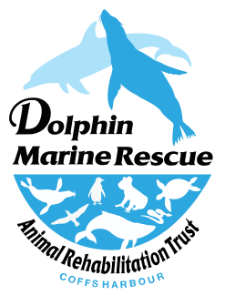

Legal form
A trust governed by a trust deed, lodged with the ACNC as its governing document. The Australian Business Register records the entity as “The Trustee for Coffs Harbour Animal Rescue Trust”.

DonateLog 01 About the trust
Coffs Harbour Animal Rescue Trust (CHART) is a registered charity in Coffs Harbour, New South Wales. It raises money to support the rescue and rehabilitation of marine wildlife.
01 At a glance
Sources: ACNC Charity Register and ABN Lookup, checked 31 October 2026.
02 Purpose
On the ACNC Charity Register the trust sums up its activities in six words:
“Rescue and rehab of marine wildlife.”
Its trust deed, lodged with the ACNC as its governing document, sets out the purposes in more detail. A selection, quoted from clause 2.1:
03 The place
Coffs Harbour looks out over the Solitary Islands Marine Park, a NSW marine park declared in 1998. It covers more than 70,000 hectares along about 100 km of coast, from the Sandon River entrance south to Muttonbird Island at Coffs Harbour.
Warm currents from the tropics meet cooler southern water here, so tropical, subtropical and temperate marine life share the same reefs and islands.
04 How it is run
A trust governed by a trust deed, lodged with the ACNC as its governing document. The Australian Business Register records the entity as “The Trustee for Coffs Harbour Animal Rescue Trust”.
The trust has a corporate trustee. The ACNC register lists five Responsible People: committee members, a director and a secretary. The trust reported no paid employees in its 2025 statement.
Under the deed, gifts go to the trust’s public fund, the Coffs Harbour Animal Rescue Fund. It has its own bank account, kept separate from the trust’s other money, and is overseen by a management committee appointed by the trust.
Not for profit: the deed says the trust’s income and property must be used solely for its purposes, and never paid as profit to members, directors or trustees.
05 Key dates
ABN 49 974 310 425 becomes active.
The trust is established.
Registered as a charity with the ACNC, subtype “advancing the natural environment”. Income tax exemption and GST concession follow from 1 July 2014.
Three business names are registered to the trust: Dolphin Marine Rescue Animal Rehabilitation Trust, Dolphin Marine Magic & Animal Rehabilitation Trust, and Dolphin Marine Magic & Animal Rehab Trust.
Endorsed as a Deductible Gift Recipient (item 1 of the table in section 30-15 of the Income Tax Assessment Act 1997).
Annual statements and financial reports for 2024 and 2025 received by the ACNC.
06 Where the money goes
From the trust’s Annual Information Statement and financial report for the year 1 July 2024 to 30 June 2025, as published on the ACNC Charity Register.
Income
$48,300
All from donations and bequests
Spending
$72,319
Total expenses for the year
Grants and donations paid
$71,430
For use in Australia
Net assets
$24,962
At 30 June 2025
Spending was higher than income that year. The difference came from money the trust held at the start of the year: its net assets went from $48,981 to $24,962.
| Year to 30 June | Income | Spending | Surplus or deficit |
|---|---|---|---|
| 2025 | 48,300 | 72,319 | (24,019) |
| 2024 | 46,863 | 11,750 | 35,113 |
2024 spending is cost of sales ($9,384) plus expenditure ($2,366), from the comparative column of the 2025 financial report. Read the statements on the ACNC register
07 Contact
65 Orlando St
Coffs Harbour NSW 2450
Australia
This is the address the trust gives on the ACNC Charity Register. No opening hours are published, so please get in touch before visiting.
manager@ccws.org.au
0468 248 207
These are the contact details listed on the trust's entry in the ACNC Charity Register.
The trust is not an emergency service. Call ORRCA on (02) 9415 3333 for whales, dolphins, seals and dugongs, or WIRES on 1300 094 737 for sea turtles, seabirds and other native wildlife. Both lines are open 24/7.